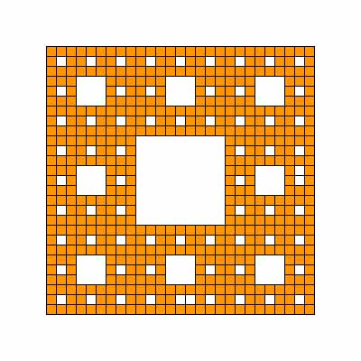

백준 2447. 별 찍기 - 10
- https://www.acmicpc.net/problem/2447
-
문제 :
재귀적인 패턴으로 별을 찍어 보자. N이 3의 거듭제곱(3, 9, 27, ...)이라고 할 때, 크기 N의 패턴은 N×N 정사각형 모양이다.
크기 3의 패턴은 가운데에 공백이 있고, 가운데를 제외한 모든 칸에 별이 하나씩 있는 패턴이다.
***
* *
***
N이 3보다 클 경우, 크기 N의 패턴은 공백으로 채워진 가운데의 (N/3)×(N/3) 정사각형을 크기 N/3의 패턴으로 둘러싼 형태이다. 예를 들어 크기 27의 패턴은 예제 출력 1과 같다. -
입력 :
첫째 줄에 N이 주어진다. N은 3의 거듭제곱이다. 즉 어떤 정수 k에 대해 N=3k이며, 이때 1 ≤ k < 8이다. -
출력 :
첫째 줄부터 N번째 줄까지 별을 출력한다. -
풀이 :
재귀함수를 통해 별이 들어갈 곳 안들어갈 곳을 정한다.
N의 크기만큼 2차원 배열을 만든다. 다음은 N = 27일 때이다.
2차원 배열을 9등분으로 나눈다.
가운데를 제외한 좌표에 재귀함수를 사용한다.
나눈 2차원 배열의 크기가 9가 될 때까지 반복하고 9가 되면 가운데를 제외한 칸에 별을 넣는다.

2차원 배열에 별을 넣는 작업이 완료되면 2차원 배열을 출력한다.